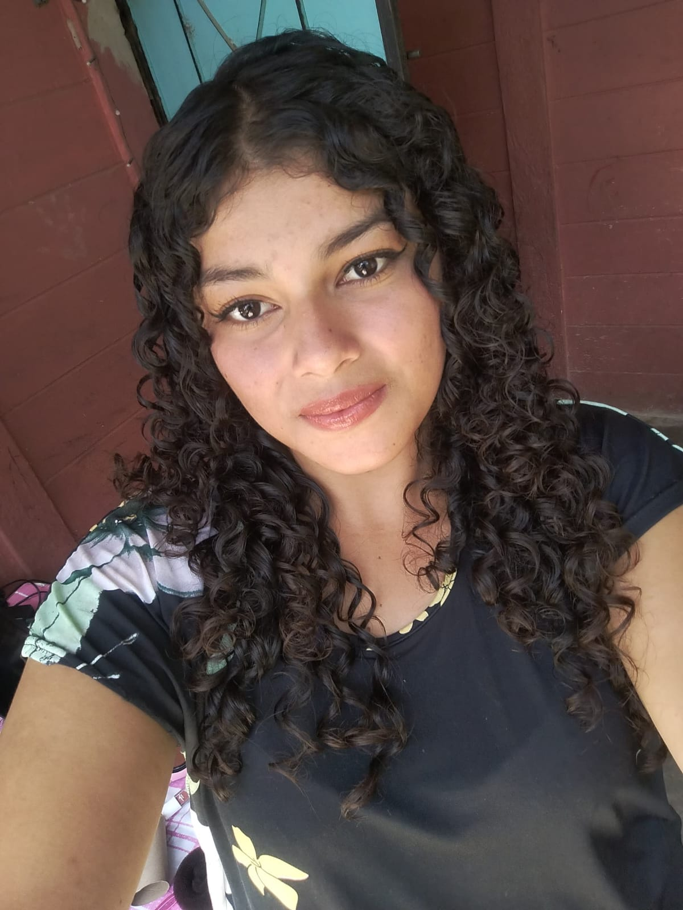

Soy una persona creativa y amable. Me gusta llevarme bien con todas las personas.
PRESENTACIÓN PERSONAL
Estphany Azucena
Berrios Mejia
Estudiante de Segundo Año
Un pequeño espacio para conocerme, descubrir mis intereses y saber dónde estoy estudiando.

Mi presentación
CONOCIÉNDOME
Sobre mí
LO QUE DISFRUTO
Intereses & Hobbies
Estas son algunas de las cosas que forman parte de mis gustos y tiempo libre.
01
Música
Disfrutar de la música y dejarme acompañar por ella.
02
Cocina
Dedicar tiempo a cocinar y disfrutar del proceso.
03
Animales
Sentir cariño y curiosidad por los animales.
04
Hacer compras
Disfrutar de salir a comprar y descubrir cosas.
GRACIAS POR VISITAR
¡Qué gusto presentarme!
Este es mi pequeño espacio para compartir quién soy y lo que me gusta.